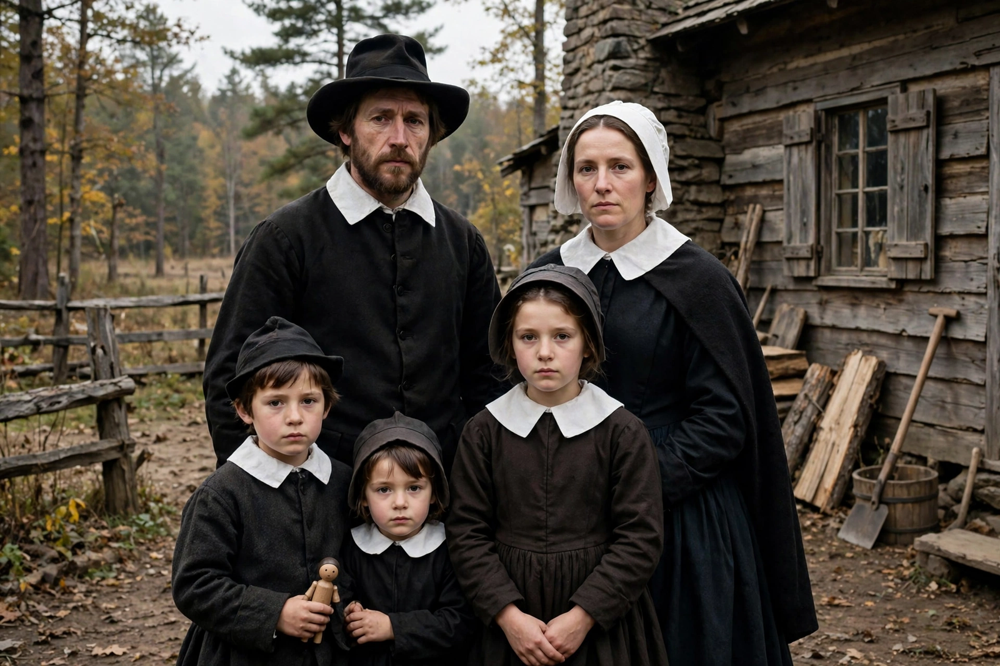

From Wikipedia, the free encyclopedia
| Puritans | |
|---|---|
 A Puritan family, 17th century | |
| Origins | English Reformation, 16th century |
| Key figures | William Perkins, John Owen, Richard Baxter, John Bunyan, Jonathan Edwards |
| Theology | Reformed (Calvinist) |
| Regions | England, Wales, New England, the Netherlands |
The Puritans were English Protestants in the 16th and 17th centuries who sought to rid the Church of England of what they considered surviving Roman Catholic practices, maintaining that the Church of England had not been fully reformed and should become more Protestant. Puritanism played a significant role in English and early American history, including the English Civil War and the founding of New England colonies.
"Puritan" began as a term of abuse in the 1560s for those who demanded further purification of the Elizabethan settlement — objecting to vestments, the sign of the cross in baptism, and episcopal government, and insisting on preaching-centred worship governed by Scripture alone. Doctrinally most Puritans were Calvinists: they held to predestination, covenant theology, and the supreme authority of the Bible, and they emphasised personal conversion, disciplined Sabbath observance, and the godly household. They differed among themselves: some sought reform within the national church, "non-separating" Puritans; others, Separatists, formed independent congregations — among them the Pilgrims of Plymouth Colony.
From 1629 Puritans of the Massachusetts Bay Colony and the other New England settlements built self-governing "Bible commonwealths" under leaders such as John Winthrop, who preached of a "city upon a hill." The Great Migration of the 1630s brought some 20,000 settlers. Congregational church order, town meetings, and colleges — Harvard was founded in 1636 — marked the culture, alongside intolerance of dissenters such as Roger Williams and Anne Hutchinson, who were banished.
Puritans were central to the Parliamentary cause in the English Civil War; the Westminster Assembly (1643–1653) produced the Westminster Confession of Faith. The execution of Charles I and the Commonwealth under Oliver Cromwell gave Puritanism political power, but the Restoration of 1660 and the Act of Uniformity 1662 drove some two thousand Puritan ministers from their livings in the Great Ejection, turning Puritanism into English Nonconformity or Dissent.
Puritan literature — John Bunyan's The Pilgrim's Progress (1678), Richard Baxter's practical divinity, the sermons of Jonathan Edwards in the Great Awakening — has had lasting influence, as have Puritan emphases on literacy, work, and covenant in American culture. The term "puritanical" survives in modern English as a byword for stern moralism, a caricature historians often qualify.